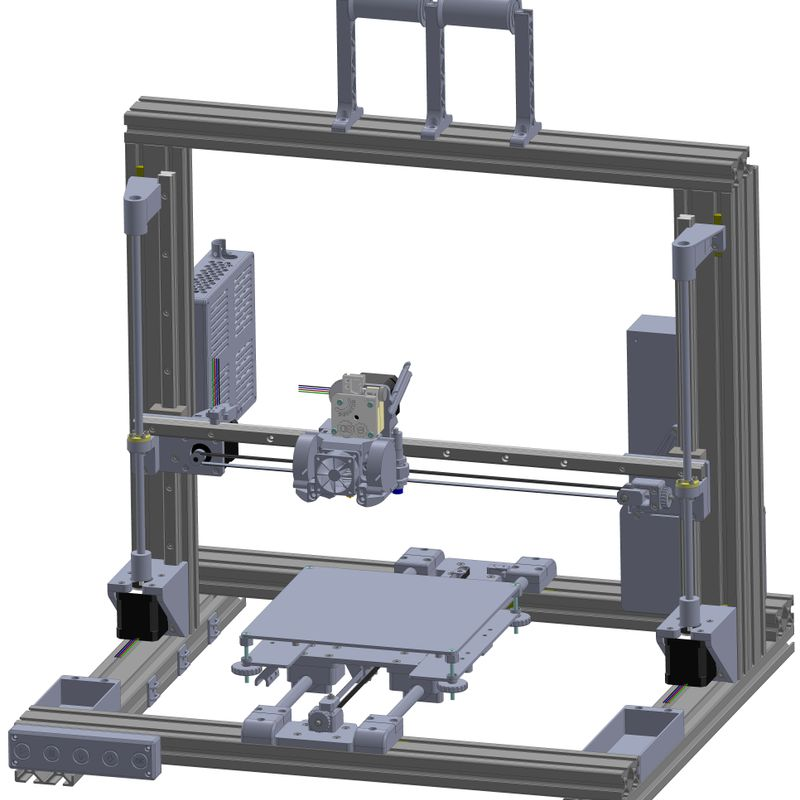
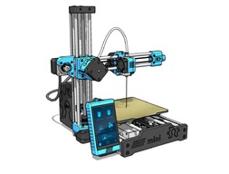
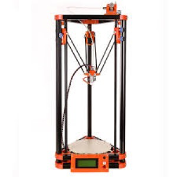

Types of 3D Printers:
- FDM (Fused Deposition Modeling)
- SLA (Stereolithography), Liquid Resin
- SLS (Sintered Layer Slicing), Powder
FDM (Fused Deposition Modeling)
FDM is the most common type of 3D printer, and is the most affordable. It works by melting a filament of plastic and extruding it through a nozzle to build up layers of the object being printed. FDM printers can be further categorized into three types: Cartesian style, Delta style, and CoreXY style.
Cartesian style
Cartesian, also known as bedslingers, are the most common type of FDM printer. They have a print bed that moves in the Y-axis, a print head that moves in the X-axis, and a Z-axis that moves the print head up and down. Cartesian printers are generally easier to build and maintain, as well as being low cost.


Delta style
Delta printers have a circular print bed and three arms that move the print head in the X, Y, and Z axes. They are known for their speed and precision, but can be more difficult to calibrate and maintain than Cartesian printers. They are also generally more expensive than Cartesian printers. They are also known to have very tall build volumes.

CoreXY style
CoreXY printers have a unique design that allows for faster and more precise movement of the print head. They use a system of belts and pulleys to move the print head in the X and Y axes, while the Z-axis is controlled by a separate mechanism. CoreXY printers are known for their speed and precision, but can be more difficult to calibrate and maintain than Cartesian printers. They are also generally more expensive than Cartesian printers, less expensive than Delta printers, and have a more compact design compared to both Cartesian and Delta printers.